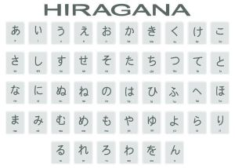

ひらがな(Hiragana)
ประวัติความเป็นมาของฮิรากานะ ฮิรางานะ (ひらがな) เป็นหนึ่งในระบบตัวอักษรที่สำคัญของภาษาญี่ปุ่น ใช้สำหรับเขียนคำภาษาญี่ปุ่น คำช่วย และส่วนประกอบทางไวยากรณ์ ฮิรางานะมีรูปร่างโค้งมนและเขียนได้อย่างต่อเนื่อง จึงแตกต่างจาก คันจิ (漢字) ที่มีโครงสร้างซับซ้อนกว่า จุดกำเนิดของฮิรางานะ ในสมัยโบราณ ประเทศญี่ปุ่นยังไม่มีระบบตัวอักษรเป็นของตนเอง ชาวญี่ปุ่นจึงรับ อักษรจีนหรือคันจิ เข้ามาใช้ในการเขียน ประมาณช่วงคริสต์ศตวรรษที่ 5–6 ในระยะแรก คันจิถูกใช้เพื่อเขียนภาษาจีนและบันทึกเอกสารต่าง ๆ แต่ภาษาญี่ปุ่นมีโครงสร้างและเสียงแตกต่างจากภาษาจีน ทำให้การนำคันจิมาใช้เขียนภาษาญี่ปุ่นโดยตรงเป็นเรื่องที่ค่อนข้างยุ่งยาก ต่อมาชาวญี่ปุ่นจึงนำคันจิบางตัวมาใช้ แทนเสียง โดยไม่ได้คำนึงถึงความหมายเดิมของตัวอักษร วิธีการนี้เรียกว่า มันโยงะนะ (万葉仮名) การพัฒนามาเป็นฮิรางานะ มันโยงะนะมีจำนวนมากและมีวิธีเขียนที่ซับซ้อน จึงมีการเขียนคันจิแบบหวัดหรือเขียนให้สั้นลงเพื่อความสะดวก เมื่อเวลาผ่านไป รูปแบบการเขียนที่หวัดเหล่านี้ค่อย ๆ เปลี่ยนรูปร่างและพัฒนาเป็น ฮิรางานะ การกำหนดรูปแบบฮิรางานะให้เป็นมาตรฐาน ในอดีต ฮิรางานะหนึ่งเสียงสามารถมีรูปเขียนได้หลายรูปแบบ เนื่องจากตัวอักษรแต่ละตัวมีต้นกำเนิดจากคันจิหลายตัว ทำให้รูปแบบการเขียนยังไม่เป็นมาตรฐานเดียวกัน ต่อมาในยุคสมัยใหม่ รัฐบาลญี่ปุ่นและนักการศึกษาพยายามกำหนดรูปแบบตัวอักษรให้เป็นมาตรฐาน เพื่อให้การศึกษาและการสื่อสารเป็นไปในทิศทางเดียวกัน ในช่วงต้นคริสต์ศตวรรษที่ 20 จึงมีการกำหนดรูปแบบฮิรางานะมาตรฐานที่ใช้ในการศึกษาจนกลายเป็นตัวอักษรฮิรางานะที่เรารู้จักในปัจจุบัน ฮิรางานะในปัจจุบัน ปัจจุบันฮิรางานะมี 46 ตัวพื้นฐาน เช่น あ (a) い (i) う (u) え (e) お (o) か (ka) き (ki) く (ku) け (ke) こ (ko) นอกจากตัวพื้นฐานแล้ว ยังสามารถสร้างเสียงอื่น ๆ ได้ด้วยการใช้เครื่องหมาย เช่น が (ga), ざ (za), だ (da), ば (ba) รวมถึงเสียงกึ่งก้อง เช่น ぱ (pa) และเสียงผสม เช่น きゃ (kya), しゅ (shu), ちょ (cho)
